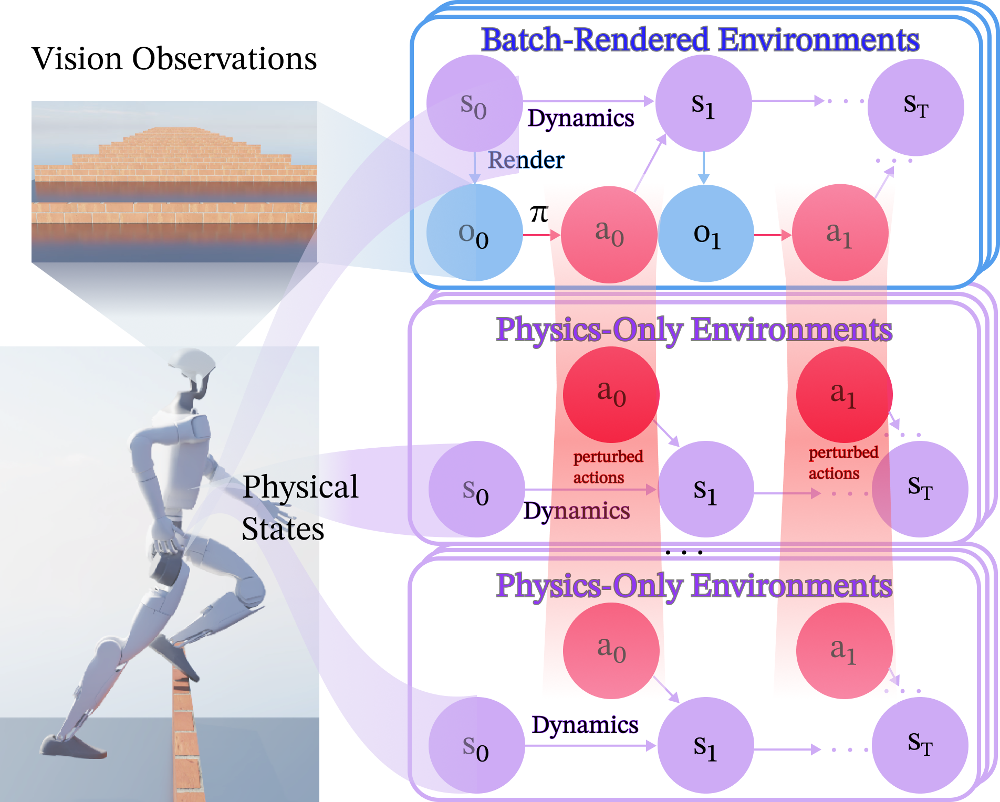
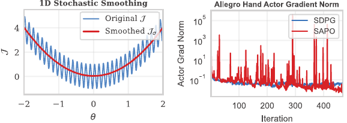
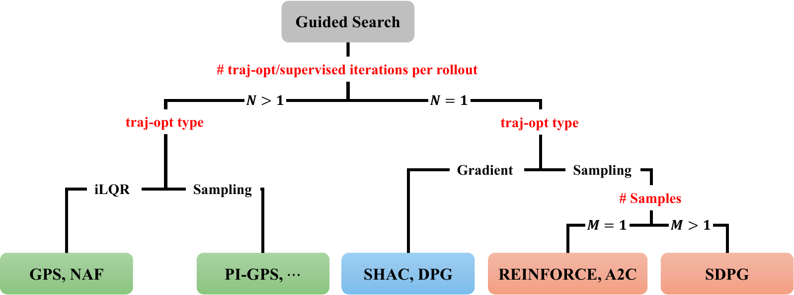
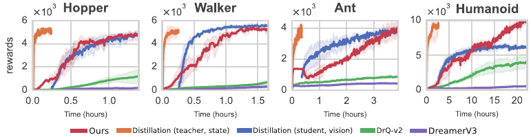
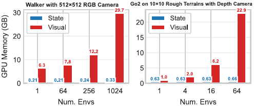
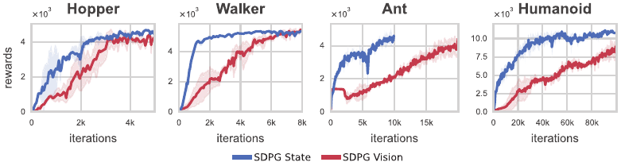
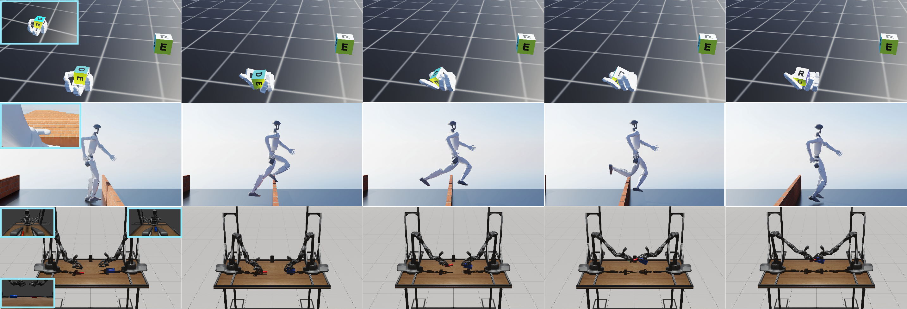

SDPG: Efficient On-policy Visual RL via
Stochastic Decoupled Policy Gradient
Abstract
We present the Stochastic Decoupled Policy Gradient (SDPG), a lightweight visual reinforcement learning (RL) method that trains diverse visuomotor control policies end-to-end within a few hours on a single NVIDIA RTX 4080 GPU. SDPG estimates policy gradients via random perturbations of trajectory rollouts, requiring orders of magnitude fewer batch-rendered environments and substantially reducing compute and memory overhead. On visual MuJoCo benchmarks, SDPG consistently outperforms baseline methods in training time, memory usage, and rewards. Finally, to support future research, we introduce a suite of realistic visual robotics benchmarks spanning dexterous manipulation and challenging locomotion, and demonstrate effective sim-to-real transfer on physical hardware.
Method Overview
SDPG combines batch-rendered and physics-only environments to estimate policy gradients. Batch-rendered environments evaluate policy performance, while physics-only environments provide perturbed rollouts for policy improvement. Instead of computing trajectory gradients analytically, SDPG estimates them via random perturbations, eliminating the need for full trajectory differentiation. An adaptive exploration strategy and reward-invariant normalization yield numerically stable updates throughout training.



Visual MuJoCo Benchmark
On visual MuJoCo benchmarks, SDPG achieves the highest rewards, matching state-based performance across all tasks. It is competitive with teacher–student distillation in training time and significantly faster than other end-to-end visual RL methods. Despite being on-policy, SDPG's memory usage is comparable to off-policy and model-based approaches—enabled by accurate gradient estimation with only 64 batched environments (vs. 4096 in PPO), allowing training on a single NVIDIA RTX 4080 GPU.



Memory Usage (GB)
| Method | Hopper | Walker | Ant | Humanoid |
|---|---|---|---|---|
| SDPG (Ours) | 10.2 | 10.3 | 10.3 | 10.5 |
| PPO† | 48 | 48 | 49 | 50 |
| DrQv2 | 10.6 | 8.2 | 10.5 | 11.6 |
| DreamerV3 | 10.8 | 10.8 | 10.8 | 10.9 |
| Distillation | 10.6 | 10.6 | 10.3 | 10.7 |
† PPO memory is estimated with 4096 environments and state-based hyperparameters; all other methods use 64 batched environments.
Learned Policies
We apply SDPG to a suite of challenging robotics tasks where the robot receives both egocentric images and proprioceptive measurements, mimicking real hardware sensors. Below, we show example trajectories generated by the learned policy.

MuJoCo Benchmark
Visual control on classic MuJoCo tasks from third-person RGB. SDPG matches state-based performance across all tasks.
Egocentric Task Suite
Challenging dexterous manipulation and locomotion tasks from on-robot sensors, trained end-to-end with SDPG.
Sim-to-Real: Unitree Go2
We validate SDPG on Unitree Go2 hardware. The robot uses an egocentric RealSense depth camera to perceive its environment and navigate challenging terrains, including uneven surfaces, boxes, and stairs. The policy is trained entirely in simulation in under 2 hours on a single GPU and transferred to the real world via zero-shot sim-to-real.
BibTeX
@misc{you2026sdpg,
title = {Efficient On-policy Visual {RL} via Stochastic Decoupled Policy Gradient},
author = {You, Haoxiang and Liu, Yilang and Abraham, Ian},
note = {Under review},
year = {2026}
}